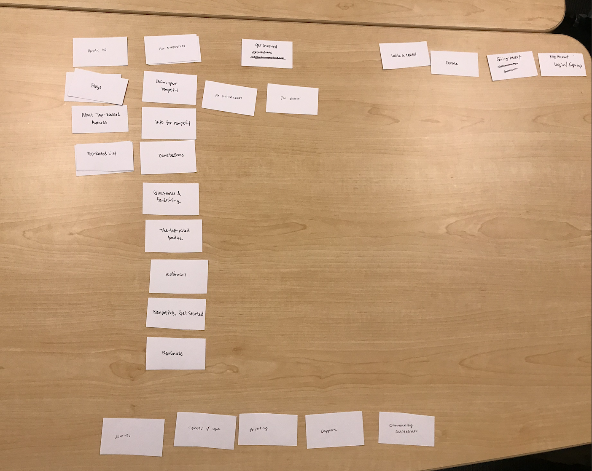

CARD SORTING
To make the our redesign of the website more comfortable for users, we redistributed the information architecture through card sorting. We not only wanted to make the navigation more cohesive, but also find a way to seamlessly incorporate our new idea of the "Donor" tab.

Here's what the cleaned up sitemap looks like.
After deciding on our information architecture, we began wire framing the website.
Because users we talked to said they needed efficient information delivery on web interfaces, we opted for an open, simpler design with a simple call to action on the front page. We noticed that on the current website, there are many distracting calls to action that lead users astray from their main purpose.
As users scroll they can see topics of volunteer or donation opportunities selected for them , and selected organizations that they might be interested in. Further down on the home page, users can see statistics of the tangible impact that GreatNonProfits has created. Users mentioned they need to see credibility and transparency in the organizations/websites they use. We kept this in mind when designing the individual organization pages as well.
DESIGN CHOICES
GreatNonProfits already has a great logo and colors. We wanted to keep the logos and main orange color, but simplify everything else.
We chose the font Avenir for the headings and body copy because it is professional without feeling too condescending. It is easy to read, Avenir Book provides the airy simplicity we wanted.
All primary call to action buttons are in the main orange color, and secondary buttons are in light gray to convey importance.
USER INSIGHTS AND CHANGES
After testing our wireframes, we made a couple changes.
One of the key user insights that we received was defining a distinct guided checkout process. Our first iteration had one page for the entire checkout process of donating. Users mentioned that it was almost too quick, and that they felt it was rushed. One user, after finishing this flow remarked, "Oh, that's it?"
To prevent future "Oh, that's it" comments, we redesigned the process to be a three-part checkout. This new process has distinct indicators of where the user is in the process, and the length is more comfortable. In testing the new flow, we saw a decrease in error.
Another significant change we made was to the organization page. Users felt that the "Donate" button that sat in the hero image was too large and confusing.
"Why would I want to donate to this org right off the bat? I still don't know that much about it."
So, we got rid of the hero images altogether, and shifted all the information up above the fold so users can immediately get quick facts about the organization they are viewing. We placed the donate button below the information, and made it smaller and less distracting.
In addition, we added breadcrumbs to track locations throughout the website. We reduced the "favorite" button to a simple heart after a few users mentioned how big it was.
MOBILE APPLICATION
We then repeated this process with the mobile app.
On the GreatNonProfits mobile app, users can earn points for every donation, redeem points for various coupons at participating vendors, and manage donations.
Mobile wireframing
On the first iteration of the mobile app, users open the app to a quick onboarding process that helps familiarize them with the app. They are quickly moved on to a survey that asks what causes they are interested in to populate their homepage.
On the homepage, users can view selected organizations they might be interested in, read articles and blog posts, tap the center heart to donate, and check on their rewards. Their rewards are tracked, and after a certain amount of points are reached, can then redeem rewards at participating vendors.
Here are a few key frames:
Mobile testing and changes
We tested the mobile app on a few users, and a few insights stood out. Users felt uncomfortable donating on their phone, so we removed the donate feature entirely from the app. They also had trouble with the "Daily Read", mentioning it was too compact.
On the onboarding process, some users noted that there were too few options to choose from when asked about their cause preferences. We swapped the wording "I care about..." to "Help us get to know you!" for a more friendly and personal voice.